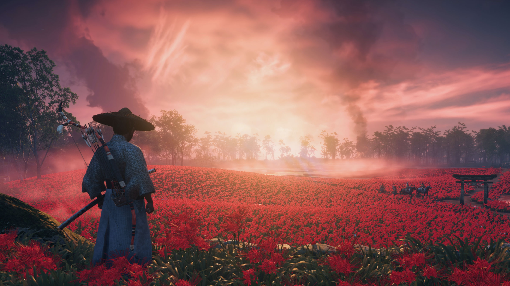
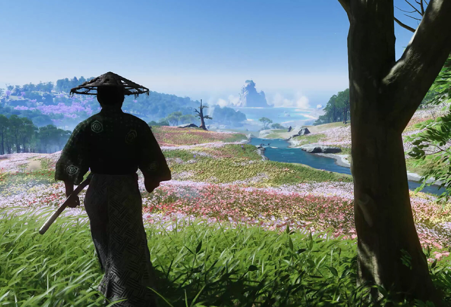
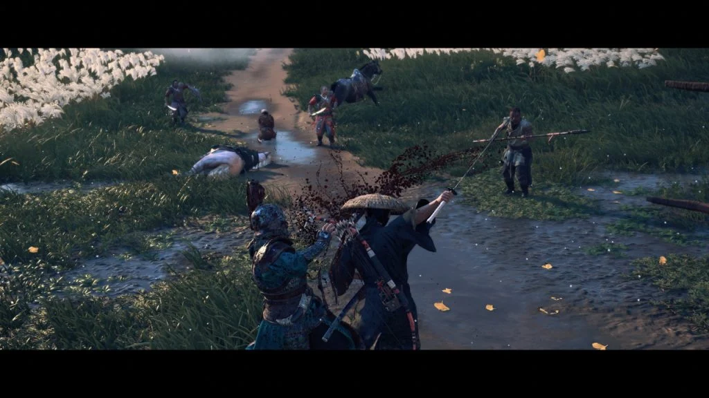
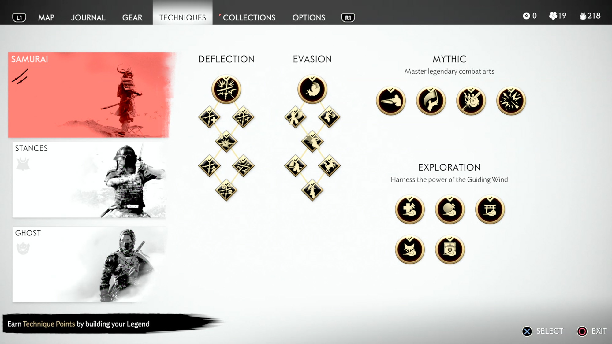
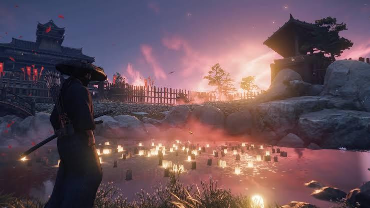
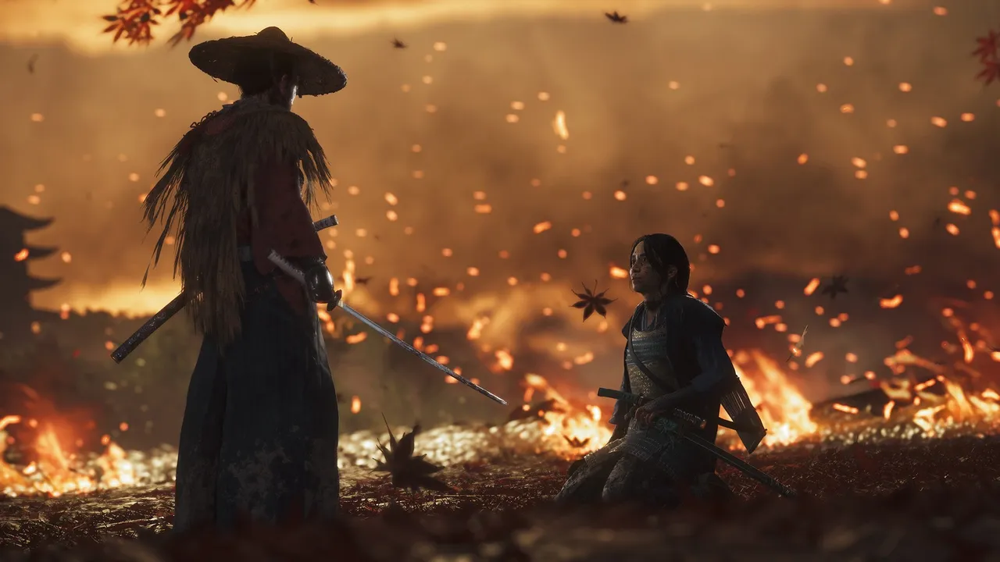
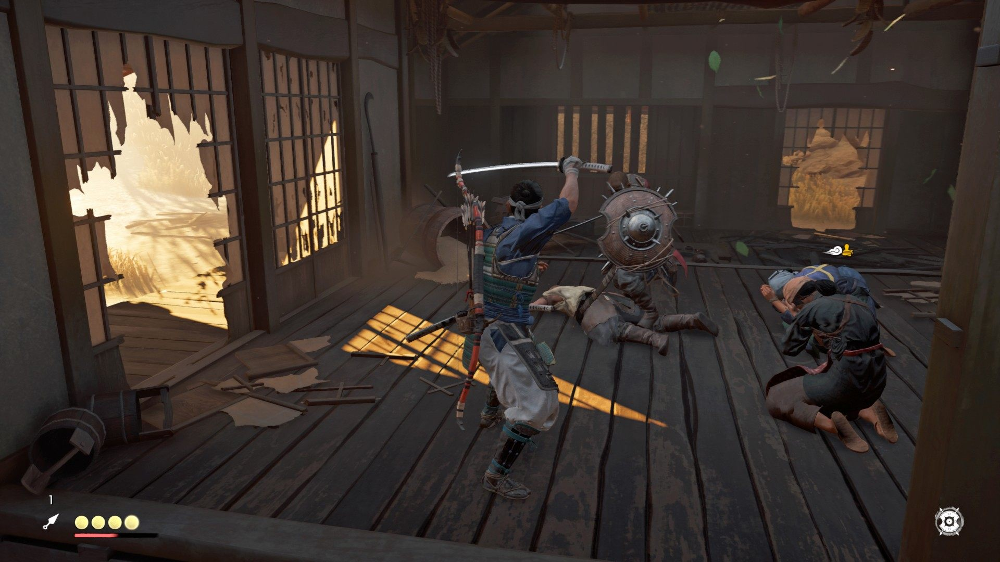
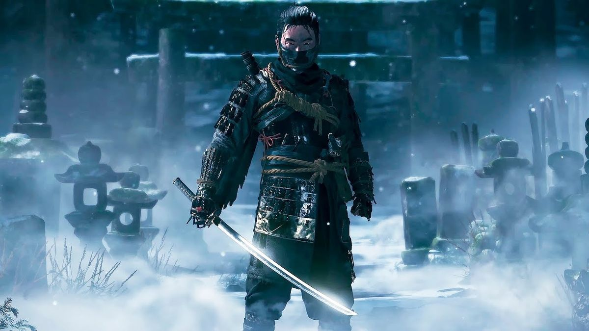

Ang Daan ng Mandirigma:
Digmaan, Sakripisyo, at ang Makabagong Lipunan sa Ghost of Tsushima
Pangunahing Ideya
Isang Online Action-Based RPG game na umiikot sa kwento ng pangunahing bida, si Jin Sakai, na siya ring karakter na kinokontrol ng player, at kung paano niya nabuhay, nakaligtas, at naitaboy ang mga sundalo mula sa Mongolian Empire palayo sa Tsushima ang Ghost of Tsushima. Nagbibigay-daan ang laro mismo sa karakter na maglibot sa isla ng Tsushima kasama ang kanilang kabayo upang palayasin ang mga bandidong Tsushima na nagnanakaw o nagdudulot ng gulo sa mga residente, at pumatay ng mga Mongolian na lumulusob sa mga nayon.

Itong laro ay ang aking paborito dahil:

Nagbibigay ang laro ng magagandang graphics na nagbibigay ng nakakarelaks na kapaligiran, lalo na kapag naglalakbay sa isla kasama ang aking kabayo.
Mayroon din itong combat system na malinis, mabilis, at legit. Sa tuwing sasabak ako sa labanan, pakiramdam ko ako ang karakter na lumalaban sa sarili ko.
Mayroon ding progression system na may skill tree ang laro kung saan maaaring gumastos ang manlalaro ng mga puntos na nakuha sa labanan upang matuto ng mga bagong diskarte.
Ang Kuwento sa Likod ng Laro
Ang kwento sa likod ng laro ang detalyeng nakakuha ng atensyon ko. Nagsimula ang laro nang sumalakay ang mga Mongol sa isla ng Tsushima. Sinubukang ipagtanggol ni Jin Sakai, ng kanyang tiyuhin na si Lord Shimura, at ng lahat ng samurai ng Tsushima ang isla mula sa mga Mongolian, ngunit pinatay ang bawat isa sa mga samurai, maliban kay Lord Shimura, na nahuli, at Jin Sakai, na halos hindi nakabitin sa kanyang mga pinsala. Upang mailigtas ang kanyang tiyuhin at mapalayas ang mga Mongolian, kinailangan ni Jin Sakai na tipunin ang natitirang mga mandirigma sa Tsushima. Sinuway niya ang samurai code, na nagsasabing duwag ang pag-atake mula sa likod tulad ng isang ambus o isang pagpatay. Gayunpaman, ang pinakamahusay na taktika ito, dahil napilitang pumasok at pumatay sa mga Mongolian si Jin Sakai, dahil walang awa nilang papatayin ang sinumang bihag sa sandaling makita ang isang samurai. Sa kabila ng digmaan na nagaganap sa Isla, mayroon ding panloob na salungatan sa loob ng Jin Sakai. Alinman sa sundin ang samurai code, na hahantong sa pagkamatay ng mga residente, o gumamit ng mga paraan ng pagtambang, tulad ng isang "Ghost", upang matiyak na mabubuhay ang mga residente ng Tsushima, ngunit hahatulan at parurusahan siya dahil sa pagsuway sa "code".
Ang Karahasan, Pang-aalipin, at Paghihimagsik ang pinakatanyag na isyung panlipunan na makikita sa larong ito.

Makikita ang karahasan dahil maraming inosente, samurai, Mongolian, at residente ang namamatay sa panahon ng digmaan. May kamatayan saanman pumunta si Jin Sakai, dahil pinilit siya mismo na patayin ang mga Mongolian na ito.
Nangyayari din ang pang-aalipin sa larong ito kapag nakuha ng mga Mongolian ang mga nayon at ginamit ang mga residente bilang mga alipin. Pinilit ang mga aliping ito na magtrabaho bilang mga panday, magsasaka, at sundalo na nilalayong maglingkod sa imperyo ng Mongolia.
Sa kabila ng pagpilit ng isla na magkaisa sa isa't isa upang pigilan ang imperyong Mongolian sa pagsakop sa kanilang lupain, karaniwan pa rin ang paghihimagsik. Dito sa islang ito ay may mga bandido na lumalaban sa mga batas para makakuha ng kapangyarihan, at mga grupo ng mga mandarambong na nagpapabagsak at pumapatay sa mga angkan na tumagal ng ilang dekada.Koneksyon sa mga Kasalukuyang Kaganapan sa Lipunan
Sumasalamin sa totoong mga isyung panlipunan na nakikita pa rin natin ngayon ang mga tema ng karahasan, pang-aalipin, at paghihimagsik sa Ghost of Tsushima. Sumasalamin sa mga modernong paglabag sa karapatang pantao, tulad ng human trafficking at sapilitang paggawa sa mga conflict zone, ang karahasan at sapilitang paggawa na inilalarawan sa laro. Higit pa rito, kung paanong naghimagsik ang mga tao ng Tsushima laban sa mga dayuhang mapang-api at mahigpit na mga panuntunan upang mabuhay, nakikibahagi ang mga modernong komunidad sa buong mundo sa mga protesta at mga kilusang panlipunan upang labanan ang digmaan, pampulitika na pang-aapi, at sistematikong kawalang-katarungan. Sa huli, itinatampok ng mensahe ng laro ang walang hanggang pakikibaka ng tao na lumaban at humingi ng hustisya kapag nahaharap sa kalupitan at paniniil.